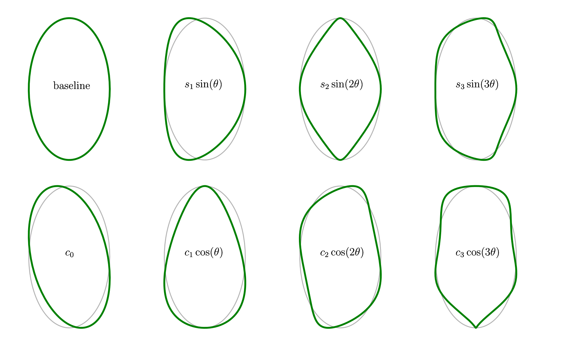
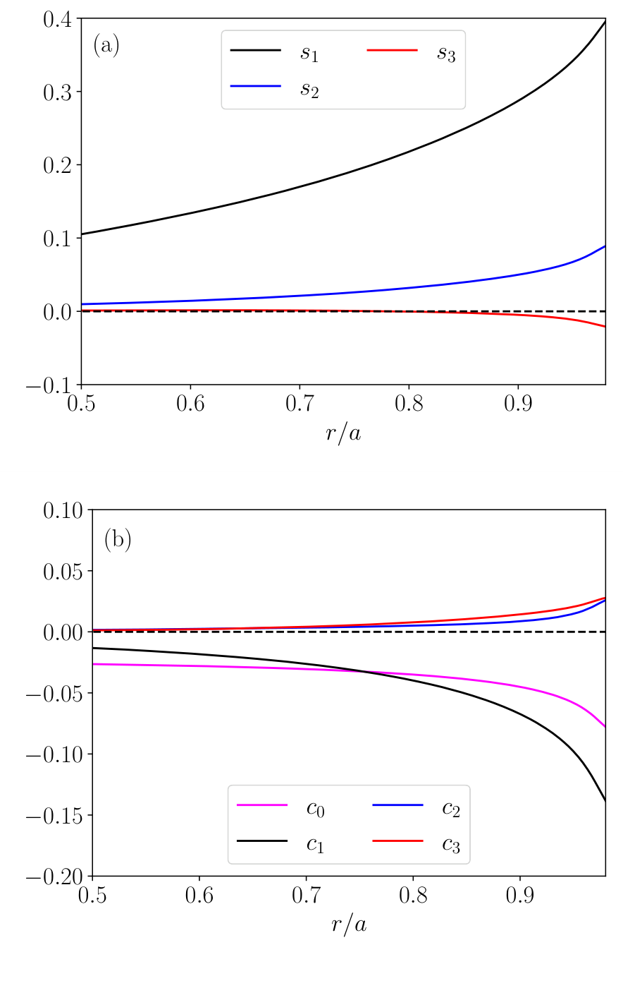
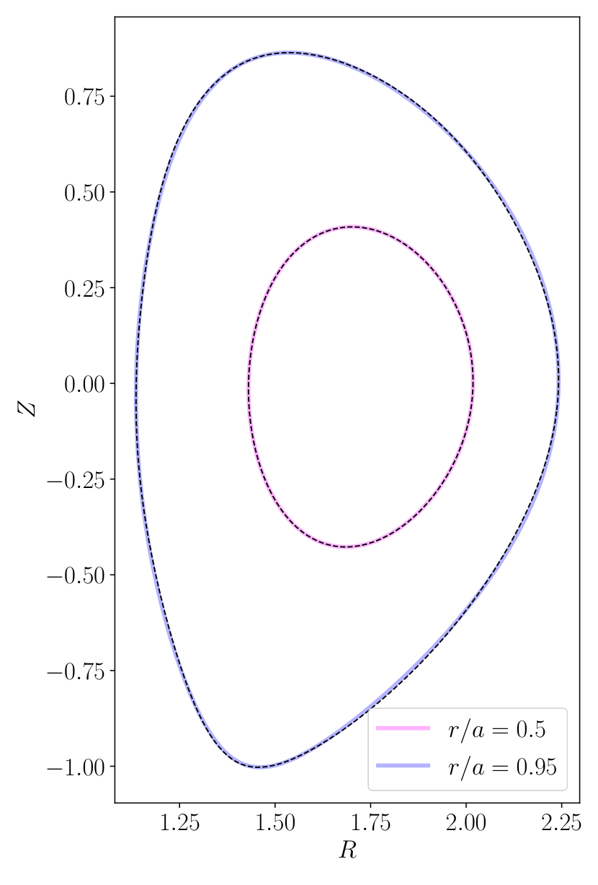
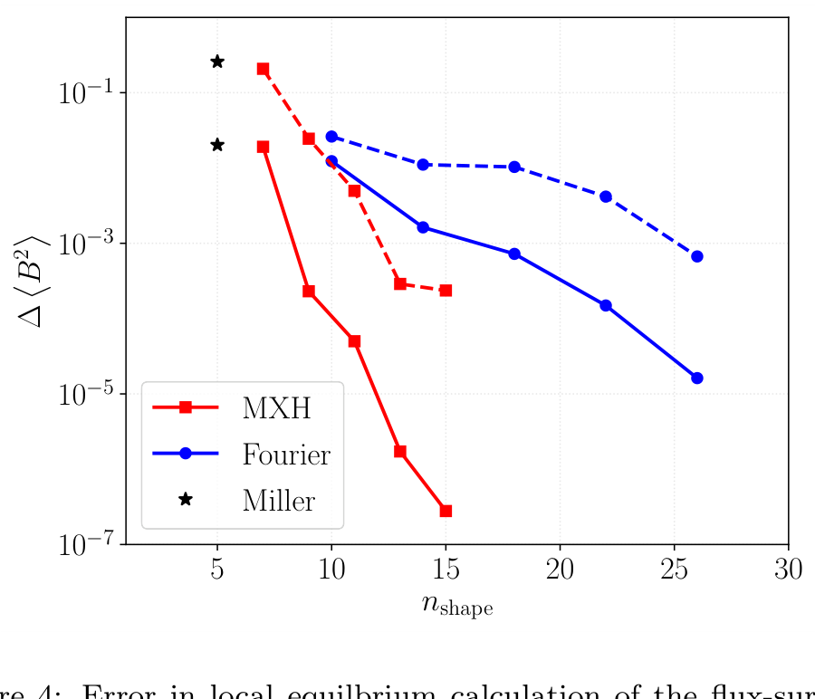
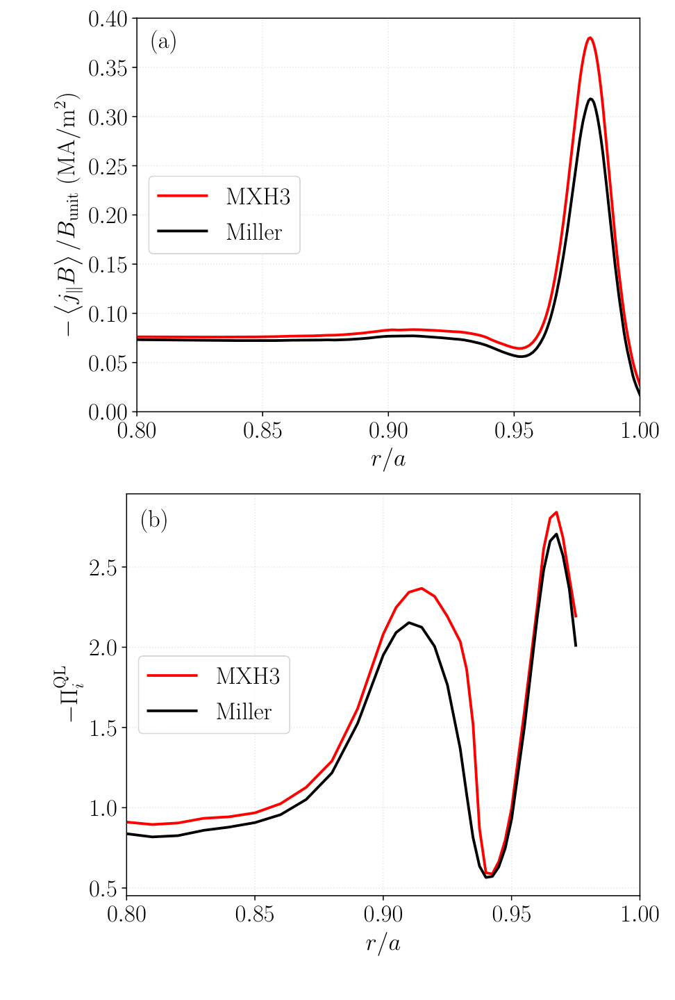

MXH：用角度谐波紧凑表示强塑形磁面
Rapidly-convergent flux-surface shape parameterization
核心判断：MXH 把磁面塑形集中到径向坐标的“谐波角”中，在一个 DIII-D H-mode 平衡上，以较少形状参数获得比标准 Miller 更准确的局域几何和输运计算。它的价值是几何表示与下游局域平衡的衔接；快速收敛是该算例的数值证据，尚未被证明对所有磁面、所有输运量或分离面本身成立。（PDF 第 1、4 页，§1、5–6）
阅读范围：上传文件全部 6 页，§1–6、致谢、图注与 18 条参考文献；全部 5 幅编号图（含各面板），无表格、无附录、无实质性未编号图。PDF 页码与该文件印刷页码一致（首页未印数字）。上传稿首页日期为 2020-11-09；OSTI 将此材料标为 Accepted Manuscript。本报告不混用期刊排版版图号和页码。另读取官方 OSTI 元数据、GACODE 几何文档与参考文献，以及一个后续公开实现的 README；未运行 NEO/CGYRO 或审计实现源码。
1. 研究问题：轮廓相似，为什么输运仍会算错？
局域新经典和回旋动理学模拟需要某一磁面附近的平衡几何。标准 Miller 的低维 D 形表示直观、易扫描，也支撑了大量历史验证；但它能够表达的轮廓有限，在强塑形、上下不对称的边缘磁面上可能不足。直接对两个坐标作 Fourier 展开可以增加自由度，却需要更多系数，也不方便单独调节三角度、方形度等物理形状特征。（PDF 第 1 页，§1；第 4 页，§5）
作者明确区分局域平衡方法与磁面参数化：前者是在某一磁面邻域求解 Grad–Shafranov 方程的展开方法，后者只是表示轮廓的公式。MXH 修改的是后者；仅有一条拟合好的闭合曲线，仍不足以确定磁场和整个平衡。本文依赖既有局域平衡算子框架〔原文参考文献 12，Candy 2009〕，并未从头推导一个新的全局平衡求解器。（PDF 第 1 页，§1–2）
论文声称的贡献包括：保留直观形状参数；通过置零系数恢复 Miller/Turnbull–Miller；以比坐标 Fourier 展开更少的系数收敛；可表达上下不对称磁面。证据分工是：式 (1)–(4) 给出构造与兼容性，图 1 展示形状自由度，图 2–3 展示实际拟合，图 4 检查一个磁场平均量，图 5 检查两类输运计算。本文没有给出普遍收敛定理，也没有跨装置统计验证。
2. 方法核心：展开谐波角，而不是直接展开两个坐标
2.1 原文公式与符号
在轴对称托卡马克的极向截面上，原文定义（PDF 第 1 页，式 (1)–(3)）：
是柱坐标径向位置， 是垂直位置， 是通过磁面水平包围盒定义的小半径；、 是包围盒中心，而非面积质心或必然等于磁轴位置。 为垂直半跨度与水平半跨度之比。 是这套参数化定义的角，不能直接用弧长角或几何极角替换； 控制径向位置的余弦相位。 无量纲，按弧度约定进入角度； 是角度展开的最高阶。长度变量保持输入平衡的单位。（PDF 第 1–2 页，§2–3）
压缩发生在哪里？纵向坐标仍用单个正弦，复杂形状通过两个角之间的差异编码。直接展开坐标与展开相位不是同一组线性基；外层余弦使低阶角度系数也能产生丰富轮廓。这是理解效率的结构理由，但只是读者解释，不能代替图 4 的实际验证。代价是表示受限：原文明确说纵向只能有一个最小值和一个最大值，不能表示任意闭合曲线。（PDF 第 1 页，§2）
2.2 上下对称、三角度和与 Miller 的连接
若 ，则 ，所以 ，而 。因此正弦系数保留关于 的上下对称性，余弦系数提供破坏这种对称性的自由度。这是由式 (1)–(3) 直接得到的性质；并非说任意系数组合都对应纯粹独立的几何变形。
只保留 ，并置零全部余弦系数及更高正弦项，就得到原文式 (4)：
这里 是 customary triangularity， 是 squareness。原文把 口头称为三角度，但数值上 并不等于 ：应使用 。只保留 可恢复标准 Miller 形状，加入 对应文中所述的 Turnbull–Miller 扩展， 允许垂直偏移。（PDF 第 2 页，§4）

以 的椭圆为基准，灰线为原始轮廓，绿线为单参数变形；上排为基准和正弦项，下排为常数与余弦项。
来源：用户提供 1708848.pdf，PDF 第 2 页，原 Figure 1。点击图片查看完整分辨率。
读图与面板：这是几何示意而非实验数据，没有坐标轴、误差条或给定的系数幅值。上排从左至右：基准椭圆； 产生三角度； 改变方形度、形成上下对称的尖顶/底趋势； 增加更高阶上下对称塑形。下排从左至右： 给出倾斜式变形； 给出作者称为 ovality 的变形，上下部分不同； 和 分别引入更复杂的上下不对称轮廓。
观察与支持：正弦组展示对称塑形，余弦组展示旧式低维 Miller 不能独立调节的形状自由度。它使式 (3) 的参数含义可解释，支持低阶模型作为形状扫描接口。 是相位偏移，图中的“tilt”并不意味着任意曲线的严格刚体旋转角。
不能推出：各系数对输运的大小、不同系数互相独立、所有幅值均能产生有效嵌套磁面，或形状在分离面处的正确性。图中视觉上的尖角不能被当作对 X 点的精确表示。
印刷表述疑点：上传稿第 1 页与图 1 图注写“第 阶产生 边多边形效应”。按字面，低阶将出现非正边数，与同处的三角度、方形度解释不相容。本报告保留此疑点，不把它当作可执行的阶数规则，也未借另一版本静默改成别的公式。实际使用以式 (3)、单参数扫描及图 1 的轮廓为准。
3. 从 EFIT 磁通网格到可用于局域平衡的参数
3.1 原文的五步工作流
- 获取 Grad–Shafranov 平衡。输入为二维网格上的极向磁通 。文中实际例子使用 EFIT 重建的 DIII-D H-mode 放电 145421。（PDF 第 2 页，§3）
- 映射磁面。按磁通等值线生成闭合轮廓 ， 可为弧长，但这一参数尚不是 。必须保留轮廓上的点序。（同页）
- 由包围盒确定基础几何。作者采用下面四个关系，避免对“中心”的不一致定义。（同页）
- 反求两个角。原文给出：
这一步不是逐点调用主值反三角函数就完成。正弦和余弦不能唯一确定整个闭合路径的角；需要结合轮廓顺序、上下/内外分支，连续展开角并固定起点方向。原文没有给出分支选择代码或异常轮廓的处理规则。建议实施时同时检查闭合后角的净绕行、连续性、是否发生非单值映射，并对浮点误差导致的反三角函数越界设置诊断。这些是读者提出的实现条件，非文中已报告的算法细节。
- 谐波分解。把周期函数 按式 (3) 分解，得到 。应对 重采样或采用对应积分权重；对等弧长采样点直接做无权 FFT，通常不是同一个角变量下的投影。（原文步骤 5 在 PDF 第 2 页；重采样要求为读者解释）
对式 (3) 使用标准 Fourier 正交性，可整理成以下投影公式；它们用于明确归一化，并非原文另编号的公式：
3.2 为什么径向平滑比单个磁面的轮廓重合更关键？
作者特别强调，各系数沿径向必须足够平滑，才能求出局域平衡所需的准确径向导数。以下将式 (1)–(3) 对 求导，直观显示误差进入哪里（报告推导，保持 不变）：
因此，小幅但高频的径向系数噪声可在导数中放大；拟合轮廓肉眼重合，并不能保证磁场、Jacobian 或输运计算准确。平滑也不能随意增强，否则会抹掉真实 pedestal 结构。本文展示了平滑曲线，但未报告采样密度、插值/平滑方案、导数误差或平滑参数选择。（PDF 第 2 页，§3；图 2）

DIII-D 145421，；(a) 为正弦/对称组，(b) 为余弦/反对称组。横轴 是归一化小半径，纵向系数无量纲。
来源：用户提供 1708848.pdf，PDF 第 3 页，原 Figure 2。点击图片查看完整分辨率。
(a) 正弦组：黑色 随半径明显增大，是主导的低阶塑形；蓝色 向边缘增大；红色 在较内侧接近零，边缘转为负值。黑色虚线仅标出零水平，不是另一种模型。 数值应经 才变成 Miller 三角度；不能把图中 直接作为 。
(b) 余弦组：洋红 和黑色 为负、向边缘幅值增大；蓝色 与红色 向边缘增长为正。边缘的 比其他余弦项更大，但系数大小与物理输出敏感度不是同一回事。
支持与正文关系：系数曲线表明这个实际平衡同时具有对称与不对称塑形，且边缘比芯部需要更多结构；曲线看起来平滑，与 §3 要求径向导数可用的目标一致。单参数含义来自图 1，拟合后的轮廓在图 3 展示。
证据边界：没有导数曲线、误差带、采样点数或平滑算法，因此不能从视觉平滑断言导数数值收敛，也不能确认最高三阶足以描述全部半径。该图不是多个放电的统计结果。

同一 DIII-D 平衡的 （内侧洋红）与 （外侧蓝紫）；黑虚线为作者称作 exact 的输入磁面，彩色实线为 MXH3。
来源：用户提供 1708848.pdf，PDF 第 3 页，原 Figure 3。点击图片查看完整分辨率。
读图：横轴为 、纵轴为 ，两者是空间位置。轴标签没有直接注明单位，正文也没有在此重新声明；本报告不擅自将图轴单位补成已核实的米。两条磁面不是同一条曲线的不同算法误差曲线，而是两个半径，各自都叠加了输入轮廓与拟合轮廓。
观察：芯部轮廓接近椭圆；外侧磁面呈强 D 形和上下不对称结构。两处彩线与黑虚线总体高度重合，支持 MXH3 对这些轮廓有良好拟合。外侧局部仍可见细小偏差，本文没有给出该图对应的距离范数或最大误差数值。
“exact”的含义：这是作为拟合目标的 EFIT/等磁通轮廓，不代表没有实验重建和网格插值误差。图 3 提供形状层证据，图 4 才检查经局域平衡计算得到的一个磁场平均量；不能从图 3 单独推导图 5 的输运精度。
不能推出：所有磁面的收敛、相邻磁面的径向导数准确性、精确分离面/X 点表示能力，或两条磁面的最大法向误差。肉眼重合不等于物理输出的误差为零。
完整数据链：磁通网格 → 磁面映射 → 包围盒 → 连续角与投影 → 径向系数及其导数 → 既有局域平衡算子 → 磁场平均量、NEO 新经典结果和 CGYRO 回旋动理学结果。本文展示后半链条的结果，但未在这 6 页中列出完整局域平衡方程、全部输入剖面和运行配置。（PDF 第 1–4 页，§1–5）
4. 收敛比较：一个整体平均量，两个半径
4.1 原文怎样定义误差？
作者对磁场强度平方的磁面平均比较不同展开阶数，原文式 (5) 为（PDF 第 4 页，§5）：
为磁场强度， 是磁面平均， 是无量纲相对差异。文中把六阶计算当作无限阶“精确值”的代理，对 作图。这不是独立解析真值；它主要反映阶数截断相对于选定高阶结果的变化，无法单独排除共同的映射、网格、局域平衡或磁面平均误差。文中对 Fourier 比较所用的角约定及高阶参考处理没有充分展开。（同页）
4.2 Fourier 基线与参数预算
原文的直接坐标 Fourier 表示为（PDF 第 4 页，式 (6)–(7)）：
这些坐标系数具有长度单位，不等同于 MXH 的无量纲角度系数。图 4 横坐标按作者的形状系数数量定义：
MXH 的固定五个量是 ；每一非零阶再加一对 。Fourier 的两个常数是两个坐标中心，每阶有四个坐标系数。MXH3 因此有 11 个量，MXH6 有 17 个量。图中的参数数不包含径向导数、压力、安全因子、碰撞参数等完整模拟输入；相同最高阶也不等于相同拟合误差。

红方点为 MXH、蓝圆点为坐标 Fourier、黑星为标准 Miller；实线表示 ，虚线表示 。纵轴为式 (5) 的 ，使用对数刻度。
来源：用户提供 1708848.pdf，PDF 第 4 页，原 Figure 4。点击图片查看完整分辨率。
读图：横轴 比较参数预算，不是同一个展开阶数；MXH 的点对应 ，Fourier 对应 。黑星给固定低维 Miller 的参照精度。实线与虚线区分半径，不是误差上下界，也不是实验重复。
观察：芯部红实线随阶数下降很快，图示范围内跨越多个数量级；相同的近似误差水平下，蓝实线往往需要更多参数。边缘红虚线整体误差比芯部更大，末端趋缓；蓝虚线也明显较高。标准 Miller 在所示两个半径上的差异均较大。曲线中的点是数值截断阶数测试，没有统计误差条。
支持：在这两个磁面上，对这个磁场平均指标，MXH 的参数利用效率优于文中直接 Fourier 基线；pedestal 对低维几何的要求更高。这个结论比只比较轮廓重合更贴近局域平衡使用方式。
不能推出：严格收敛率、所有平衡都参数减半、全部输运量同样收敛或计算速度减半。纵轴是相对于六阶代理的差异，不是独立真值误差；无需从图上读取更多小数位来制造精度。
摘要的“pedestal 只需大约一半的参数”，应理解为该算例下图 4 所示的精度—系数数量关系。计数公式说明每阶增长率约为两倍，但不能推出运行时间缩短一半。作者没有报告墙钟时间、内存、映射和拟合耗时。图 4 的边缘虚线也出现趋缓，不支持把“快速”进一步解释为所有阶数下的严格指数收敛定理。（PDF 第 1 页摘要、第 4 页，§5）
5. 输运结果：不同输出对塑形误差的敏感度不同
论文仍使用 DIII-D 145421，比较 MXH3 与标准 Miller。NEO 计算新经典 bootstrap current，CGYRO 计算准线性回旋动理学环向离子动量通量。作者同时报告增长率和能量通量的差异，但没有给这两者单独的曲线或原始数据表。（PDF 第 4 页，§5；第 5 页图 5）

DIII-D H-mode 145421；红色 MXH3 对照黑色标准 Miller。(a) NEO 新经典 bootstrap current，(b) CGYRO 准线性环向离子动量通量；横轴均为 。
来源：用户提供 1708848.pdf，PDF 第 5 页，原 Figure 5。点击图片查看完整分辨率。
(a) 读图和变量：纵轴印作 ，单位 。负号随原图约定保留， 是归一化场强；因此这不是不带符号的裸电流密度。官方 GACODE 文档另解释这一场强约定，本文本身没有详细定义。红黑曲线在较内侧较接近，在 pedestal 峰值附近分离明显，红线的峰值更高。
(b) 读图和变量：纵轴是 ，表示带作者符号约定的准线性离子环向动量通量；本图未标出单位或完整归一化。两种几何产生相似的径向结构：第一处较宽峰、中间低谷、再出现外侧较窄峰；红线大多高于黑线。不能因为图示负号而对真实通量方向作脱离坐标约定的判断。
支持与定量关系：图示差异证明几何选择能够改变下游输运输出；原文 §5 给出 bootstrap current 的约 16% 与 MXH3 相对 MXH6 的约 0.8%，以及动量通量平均差异约 17%。这些数字取自正文，非由此图重新数字化得到。增长率 2.5% 与能量通量 7% 只在正文给出。
不能推出：红线已经被实验确认为真值、17% 是统一定义的绝对误差、MXH3 对非线性湍流同样精确，或差异只由上下不对称性产生。图中没有高阶 Fourier、MXH6 曲线、实验点或误差条，相关基准必须依赖正文说明并通过额外算例验证。
| 原文数字 | 定位与对象 | 比较及边界 |
|---|---|---|
| 约 16% | PDF 第 4 页 §5：Miller 的 pedestal bootstrap current 不准确程度 | 作者用“inaccuracy”描述；未在这里单独写出该 16% 的分母、径向取样或聚合方式，不能直接等同于实验测量误差。 |
| 约 0.8% | 同段：MXH3 的 bootstrap current 误差 | 作者明确注明相对于 MXH6；是模型阶数间的数值比较，非独立测量真值。 |
| 约 17% | 同页右栏：Miller 与 MXH3 的动量通量差异 | 原文说对各半径平均；未给出平均权重和误差聚合公式。只能保留“约 17% 差异”的表述。 |
| 2.5%、7% | 同段：线性增长率、能量通量的较小差异 | 沿用同段比较背景；原文未提供独立图、完整取样和计算配置，不能据此确认所有模态/波数都如此。 |
| 同页左栏：生产 NEO bootstrap current 模拟常用的 Fourier 展开阶数 | 作者的生产经验陈述，与图 4 的横坐标范围不是同一项独立性能测试；不能用它拼成统一加速倍数。 |
证据支持的物理含义：用低维 Miller 轮廓代替更完整的上下不对称几何，可能对动量通量比对增长率、能量通量带来更大影响。尚不能确认：这一差异完全来自某一个余弦系数，或一定导致更准确的实验旋转预测。本文没有逐系数消融、非线性饱和输运验证、对实验动量通量的直接比较，也没有不同 EFIT 重建不确定性的传播。（PDF 第 4–5 页；读者评价）
6. 可信度、局限与需要分开的结论
6.1 原文明确的条件与经验判断
作者明确承认表示并非完全一般，纵向只能有单个最高点和最低点；明确要求径向系数足够平滑；把六阶结果用作无限阶代理。作者说“按我们的经验”MXH3 足以用于很靠近分离面的新经典和回旋动理学模拟。这是使用经验，本文实际呈现的拟合和收敛样本来自一个放电及两个指定半径，并不构成所有分离面邻域的充分条件。（PDF 第 1–2、4 页，§2–3、5）
6.2 阅读者提出的检查项
- 数值真值的独立性。六阶代理与低阶共享表示和求解流程；要判断绝对几何误差，需用更高阶、不同坐标映射或直接网格平衡作独立交叉检查。小的 误差也可能掩盖局部误差抵消。（图 4、式 (5)）
- 角变量与径向导数。作者给出反三角关系，但未说明连续分支、积分权重、极值定位与平滑实现。它们会改变截断谱和下游几何，复现时需要锁定。（§3、图 2–3）
- 分离面与任意轮廓的边界。很靠近分离面的闭合磁面与带 X 点的精确分离面是不同对象。本文没有证明有限阶平滑 MXH 能在 X 点处保留正确局域几何，也不适用于不满足上述纵向极值结构的任意轮廓。（§2、5；读者推断）
- 参数数与总成本。只有系数预算，未给实际耗时；增加基线阶数的开销可能小于 NEO/CGYRO 求解开销，因此参数压缩不能直接当作整个模拟的加速。（图 4、§5）
- 输运归因与泛化。图 5 是两种几何表示的对比，并非逐阶/逐系数消融；没有误差条、多放电统计、非线性湍流或实验输出校验。不能把差异一律称为“不对称性导致的真实误差”。（§5）
- 报告的覆盖边界。上传稿足以解释构造和已报告数值结果，却没有原始平衡文件、全套剖面、运行输入及版本号。这是本次复现资料缺口，不等于证明作者当时没有这些资料。
6.3 如何评价这篇短文？
它的强项是工程取舍清楚：把常见磁面限制在一个足够实用的表示族中，保留既有 Miller 接口，再用局域几何与实际输运输出评价表示误差。构造和兼容性的结论较坚实，DIII-D 算例里的收敛优势有直接图示支撑；“各种强塑形情形都够用”的推广证据较弱。后续使用应优先验证目标输出和导数，而不是只检查轮廓截图。
7. 可以借鉴的做法与迁移条件
下列建议面向一般轴对称平衡、几何压缩或局域输运工作，不假设读者正在做某个具体课题。三维仿星器若要采用类似思想，必须增加环向依赖并重新检验几何映射，不能直接套用本文二维公式。
| 借鉴对象与原因 | 前提和迁移步骤 | 成本与失败模式 |
|---|---|---|
| 在结构变量中展开。式 (3) 展开相位差，利用预置正弦纵向结构降低自由度；其价值是与常见磁面形状相匹配。 | 先检查磁面是否能连续写成式 (1)–(2)，再统一角约定；投影低阶系数，逐阶比较几何及目标输出。 | 拟合本身成本低于完整输运求解；复杂极值结构、非单值角映射或近 X 点的局部尖锐行为可能使优势消失。 |
| 对旧模型建立精确退化关系。式 (4) 允许从熟悉的 Miller 输入逐步增加自由度，便于回归验证和解释。 | 固定包围盒与符号约定，先置零所有扩展项，再分别打开 、余弦项及 ，检查退化极限。 | 需要少量解析/合成轮廓用例；旧接口若用不同中心或不同三角度定义，即使名称相同也不一定数值相同。 |
| 把系数的径向正则性作为输出。图 2 与 §3 强调导数可用性，比只拟合单条轮廓更接近局域平衡需求。 | 在邻近磁面统一分支与点序；比较不平滑、适度平滑及加密网格的导数；同时监控形状偏差。 | 需要多磁面数据和误差预算；平滑不足会放大噪声，过度平滑会抹去 pedestal 梯度。 |
| 以目标物理量选阶数。图 4–5 联合使用磁场平均和输运输出，而非单纯几何距离。 | 先用便宜几何指标筛选阶数，再在少数半径运行 NEO/CGYRO；对动量、能量、bootstrap current 分别设容差。 | 主要成本在下游计算；若只用平均场强或增长率选阶数，可能遗漏对动量通量敏感的项。 |
与书房已有的 2026 年 MXH–Chebyshev / VEQ / VEQ-R 三文报告可形成阅读顺序：先理解本篇的角度谐波表示，再研究后续如何把它接入径向谱展开或平衡求解。两份报告各自保留原论文版本；本篇没有把后续算法成果归入 2020/2021 年工作的证据。
8. 可检验的后续研究方案
原文结尾强调 MXH 有望兼顾边缘计算精度与直观接口，没有列出明确的后续实验清单。以下全部是阅读者建议；按复现基础、归因价值与计算成本排序，阈值是建议的预先验收标准，不是原论文结果，也未声称这些方向具有未经检索的新颖性。
8.1 优先：独立参考与导数的误差预算
动机与假设：图 4 使用六阶代理，图 3 只展示轮廓；假设 MXH3 对目标磁面的轮廓、径向导数和局域磁场都能达到应用容差。最小实验：取得 DIII-D 145421 的确切时间片平衡，在芯部与边缘各取一组相邻磁面；同时计算 Miller、MXH3、MXH6、更高阶 MXH 和加密的直接 Fourier/网格参考。加密磁通网格与角采样至少一次，先确认参考本身收敛。
指标：法向轮廓误差、、、磁场逐点误差，以及原文 。建议判据：参考加密变化小于候选模型容差的十分之一，再判断候选是否达标；例如几何法向误差相对于 小于 0.1%、目标 bootstrap current 差异小于 1%。若平均量达标而导数/点态量不达标，否定“单个平均指标足以选阶数”的假设。资源与风险：工作站完成几何检查，下游需 NEO 和匹配输入；EFIT 插值误差与 X 点邻域的可映射性可能成为主误差。
8.2 逐系数消融：为什么动量通量更敏感？
动机与假设：§5 报告动量约 17%、增长率 2.5%、能量 7% 的差异；假设余弦塑形自由度对动量通量变化贡献显著，但不能预先把全部变化归因于它。最小实验：在图 5 的代表性半径上，使用同一套剖面与数值配置，分别运行仅 、加入 、加入 、加入余弦组，以及完整 MXH3。每次改变系数时同步改变其径向导数；另做纯组间开关和单项开关，识别相互作用。
基线和指标：标准 Miller、完整 MXH3、已收敛高阶几何；记录模态增长率、能量通量、环向离子动量通量及数值收敛差异。建议判据：若恢复余弦组使动量结果稳定接近完整 MXH3，且这种变化显著大于加密计算带来的变化，则支持该组的归因；若正弦组或导数变化同样主导，则否定简单归因。资源与风险：一组 CGYRO 线性/准线性扫描，需有匹配的波数、碰撞与归一化设置；项间非线性耦合可能使单项结论依赖开关顺序。无需先做昂贵的全非线性矩阵。
8.3 自适应阶数：何时 MXH3 不再足够？
动机与假设：MXH3 的实用性来自作者经验，缺少多形状范围图。假设根据残余角谱、导数误差与目标量收敛联合选阶，比固定三阶更稳健。最小实验：从可获取的独立平衡中选择弱塑形、强三角度、上下不对称、不同分离面距离的磁面；先构建几何数据库，再挑选最难拟合的少量情形做输运。训练或调参集与验证平衡分开，避免只优化当前放电。
基线和指标：固定 MXH3、MXH6、相同参数预算的坐标 Fourier；比较达成同一误差容差所需系数、映射失败率、导数误差、拟合耗时与最终输运差异。建议判据：自适应方案必须降低超容差比例，同时明确报告平均参数预算；若只是普遍增加阶数却没有减少失败或改进输出，就否定其优势。资源与风险：多数几何检查适合工作站，下游验证需要集群/既有代码；角映射失效不是增加阶数就能解决，需单独记录并回退。
8.4 输入不确定性：0.8% 的截断收益是否可分辨？
动机与假设：§5 的 0.8% 以 MXH6 为参照，没有传播平衡重建误差。假设在某些 pedestal 区域，EFIT 输入不确定性或剖面噪声大于三阶到六阶的变化。最小实验：取得同一时间片的重建集合或有依据的扰动范围；对每个样本统一运行 MXH3/MXH6 与 NEO，固定其他输入或分别量化它们的变化。
基线和指标：同一重建内部的阶数差异，对比跨重建的 bootstrap current 分布；增加导数对噪声与平滑强度的敏感度。建议判据：若输入不确定性区间普遍覆盖阶数改善，则该改善在当前输入精度下不可辨识，应优先改善重建或导数稳定性；若阶数收益在各样本中稳定大于不确定性，则支持提高表示精度。资源与风险：需要重建集合和批量 NEO；无依据的随机坐标噪声不能冒充真实 EFIT 不确定性。
9. 复现路径、公开实现与缺失输入
本文已提供：完整参数化公式、五步拟合概念流程、DIII-D 放电编号、两个收敛半径、MXH3/MXH6 和 Fourier 的参照结构、NEO/CGYRO 名称、5 幅结果图及摘要数字。未提供于上传稿：该放电时间片、GEQDSK/EFIT 网格文件、轮廓采样和插值规则、角展开分支算法、径向平滑/求导方法、所有输运剖面、波数及模态选择、运行配置、代码版本、资源与耗时、图的原始数据。（PDF 全文，尤其 §3、5）
外部实现线索，与原论文复现材料分开：当前 GACODE 官方几何文档明确列出 MXH3 公式、对称/反对称矩及 CGYRO/NEO 的塑形局域平衡模型选项；文档还给出参数映射，如三角度满足 、方形度满足 。这确认了可用的下游接口，但本报告未把当前文档当成论文当年版本的运行输入，也未验证任何新运行结果。（访问日期 2026-10-05）
另有 MXHEquilibrium.jl 的公开 README，说明其支持 MXH 拟合与 GEQDSK 平衡对象，可作为实现线索。本文只读取 README，没有审计拟合源码、判断其与原文算法完全一致，或认定它是本论文的原始代码。（访问日期同上）
- 先用解析椭圆与 Miller/Turnbull–Miller 轮廓检查包围盒、分支和退化关系；明确长度、磁通、角度方向和符号约定。
- 再用实际磁通网格构建相邻磁面，重现图 2 的平滑系数与图 3 的轮廓；保存所有采样/拟合设置。
- 检查径向导数与独立高精度参考，再重现图 4 的两个半径和系数预算。原式 (5) 与独立参考误差分别报告。
- 只有获得匹配的 NEO/CGYRO 输入后，才复现图 5；把数值解收敛、阶数变化、平衡输入不确定性分开记录。
本次交付是论文阅读和证据核查报告，未进行 EFIT 重建或输运算例复算，不能用报告检查通过来替代科学计算复现。
10. 来源、图索引与覆盖状态
| 材料 | 版本与用途 | 覆盖状态 |
|---|---|---|
| 用户提供的 1708848.pdf | 6 页，首页标 2020-11-09；作为正文、公式、图号和页码的唯一主材料 | 全部页面与正文已阅读；图 1–5 全部裁剪、嵌入并逐面板解释；无表格/附录/未编号信息图 |
| OSTI 官方记录；公开全文入口 | 元数据标为 Accepted Manuscript，列出作者、期刊、卷期、012001、DOI | 元数据已读取；未将其日期字段解释成已核实的正式上线日期 |
| GACODE 参考文献 | ACB21 条目给出 63:012001, 2021，与期刊卷年一致 | 只核对书目信息；期刊排版全文未获取，不宣称逐字版本比较 |
| 附录/补充材料 | 上传稿无附录；上传稿和已取得的 OSTI 记录未列出独立 supplement | 没有额外 supplement 可读；出版社页面本次未成功获取，未能独立确认其是否另有补充文件 |
| 原始数据/原始代码 | 全文没有专门的数据或代码链接；当前官方文档与后续 README 仅作外部接口线索 | 原始平衡、运行输入、图数据未获得；未运行或审计源码 |
全报告的科学论断优先定位到上传稿 PDF 页码、章节、公式和图号；外部资料只在对应段落给出链接。引用文献帮助辨认基础方法：Miller 1998〔4〕、Candy 2009〔12〕、EFIT 1985〔13〕、Turnbull 1999〔14〕、NEO〔15–16〕与 CGYRO〔17〕；本次没有逐篇精读这些引用，也没有把它们的全文算入覆盖范围。
原图索引： 图 1：单参数形状 · 图 2：径向系数 · 图 3：拟合轮廓 · 图 4：收敛曲线 · 图 5：输运比较。全部图源为上传 1708848.pdf，未重绘；原始图内数学标注保持原样。图的归属与权利仍属于原作者/出版方。
图清单与页码、裁剪坐标、资源路径 · 材料清单与主 PDF 校验值
验收状态：5 幅最终 300 DPI 裁图已逐一视觉核对；公式预渲染为 HTML/MathML 并保留 LaTeX，样式和字体随资源打包，不依赖远程脚本。资源与锚点检查通过；仅用应用内置浏览器完成桌面、390 像素窄屏、方法公式、原图、研究方向和覆盖说明的视觉检查，修复了窄屏公式编号重叠；未使用 Chrome。打印样式已作视觉预览，实际打印分页尚未验收。
材料覆盖完整性：本报告完整覆盖上传的 6 页材料；没有宣称覆盖未获取的期刊排版版、潜在补充文件或原始运行数据。